Kahun - Custom 3D Engine (C++ / OpenGL)

Kahun is a hex-based action-adventure game inspired by Tiki culture, developed entirely on our custom C++ / OpenGL game engine.
Players take on the role of a young shaman who wields magical runes to battle hostile creatures, explore a mysterious island one hex at a time, and rescue a kidnapped son from the forces that threaten the world.
The project combines tactical hex-based exploration, rune-based combat, and environmental puzzles, while serving as a showcase of the capabilities of our in-house 3D engine.
Team ▾
Team Members
| Name | Role |
|---|---|
| Żaneta Żurańska | Team Lead, Engine & Gameplay Programmer |
| Mateusz Lipiński | Engine & Gameplay Programmer |
| Damian Jasek | Engine Programmer |
| Igor Skwarczyński | 3D Artist |
| Konrad Kuberski | Engine Programmer, 3D Artist |
| Jakub Bukowski | 3D Artist |
My Role in the Project
I served as both Team Leader and Engine & Gameplay Programmer. My work covered both the development of the custom engine and gameplay systems, while also coordinating the team, managing the repository, and integrating features into the final builds.
Engine Development
- PBR renderer implementation
- Render pass architecture
- Post-processing pipeline
- Asset Manager
- Asynchronous asset loading
- Hot-reloading for engine assets
- Skeletal animation asset support
- Editor development
Gameplay Programming
- Enemy AI combining Utility AI and Behaviour Trees
- Combat UI implementation
- Level appearance generation
- Gameplay systems integration
Team Leadership
- Project planning and task coordination
- Repository management
- Resolving merge conflicts and integrating features
- Preparing and stabilizing the final project builds
Technologies Used ▾
- C++
- OpenGL
- GLFW
- GLM
- Assimp
- ImGui
- FMOD Core API
- Motion Capture
Codebase ▾
Source code for Kahun and its custom 3D engine, including the rendering pipeline, asset manager, editor tools, AI systems, gameplay mechanics, UI, and engine architecture built in C++ with OpenGL.
DZeMIKK/include/renderer
DZeMIKK/include/assetManager
game/include/enemySystem
The diagrams below present two of the most important systems I designed during development: the rendering pipeline and the asset manager responsible for asynchronous loading, hot reloading, and resource management.
Renderer Architecture
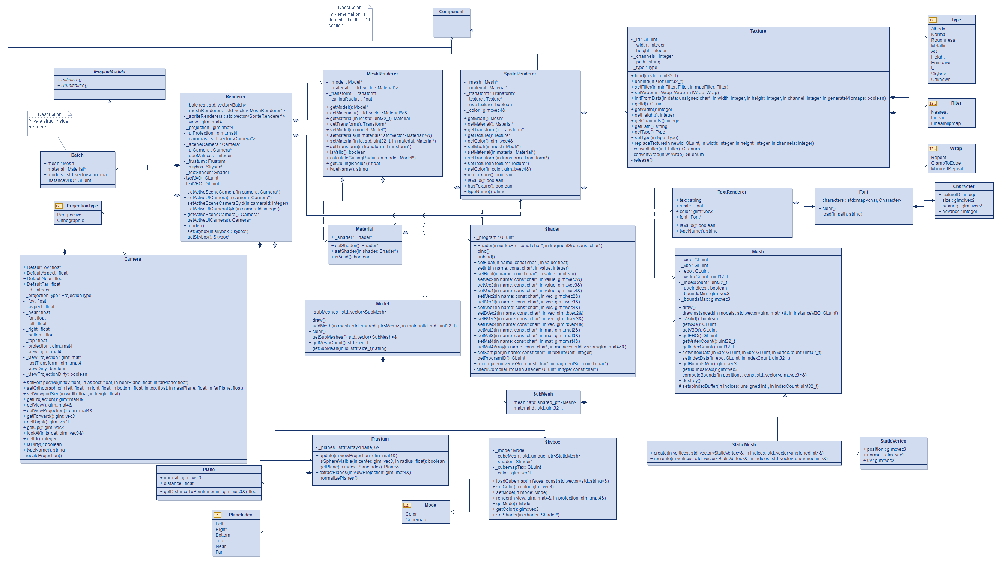
Asset Manager Architecture
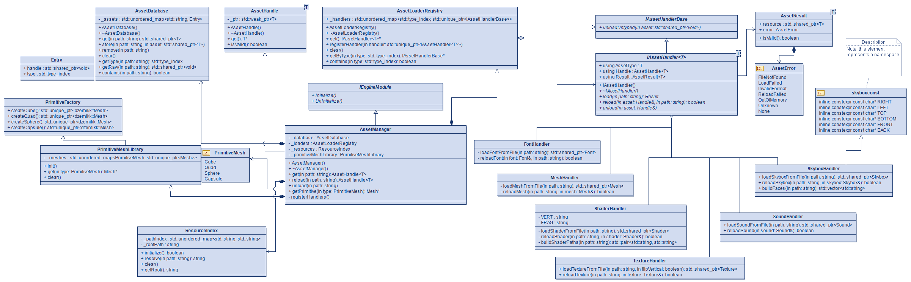
Custom Engine Editor in Action
The video below showcases the custom editor I developed for the engine. It allows designers to create and edit scenes, build and manage prefabs, configure UI elements, place and manipulate objects, and adjust game properties in real time. These tools significantly streamlined the content creation workflow and made rapid iteration during development much more efficient.
The project includes motion capture data integrated into the animation system, allowing for more natural and realistic animations. Mocap data was processed and adapted to the custom animation pipeline built in the engine.
Motion Capture in Action
The video below demonstrates how motion capture data was used.
Development Notes ▾
Project Challenges
Kahun was developed in an extremely short timeframe of around 4 months, during which we had to build a full game engine, editor, and a playable game simultaneously. The biggest challenge was maintaining a clear production structure and keeping development on schedule while rapidly iterating on core systems.
- Delivering a complete engine, editor, and game within ~4 months required strict planning and a very disciplined workflow. We addressed this by defining a clear production schedule and dividing work into tightly scoped milestones.
- First-time experience with motion capture integration, which significantly increased production complexity and required dedicated time for experimentation and setup. To manage this, we temporarily assigned a small dedicated sub-team to handle mocap workflows and integration.
- Performance and optimization challenges typical for custom engine development. Without an off-the-shelf framework, we had to design performance-aware systems from the ground up.
- Designing enemy AI that supports readable yet strategic gameplay, allowing players to plan and adapt rather than react randomly.
How We Solved It
The project succeeded thanks to strong scheduling discipline, iterative development, and building robust systems from the beginning rather than patching issues later.
- Strict production timeline with clearly defined milestones helped us keep scope under control and deliver engine, editor, and gameplay in parallel.
- Motion capture production was split between two dedicated contributors, which allowed the rest of the team to continue engine and gameplay development without disruption.
- Performance was addressed at the architectural level: the asset system was designed to prevent duplication, while rendering uses instancing, frustum culling, and backface culling. Collision systems rely on octree spatial partitioning, and many gameplay systems use dirty-flag optimization to avoid unnecessary updates.
- AI was implemented as a hybrid system combining Utility-Based AI and Behaviour Trees, allowing enemies to select actions dynamically based on game state and player behavior, creating more adaptive and strategic encounters.
What I Would Do Differently
Looking back, I would place significantly more focus on visual quality, readability, and polish earlier in production. In the final stage of the project, time constraints limited how much we could refine presentation and clarity.
Despite that, Kahun was an extremely valuable experience that combined engine development, tool creation, and gameplay design in a single production. It strongly improved my understanding of full pipeline game development and large-scale system architecture.
Gameplay Video & Trailer ▾
Gameplay & Trailer Showcase
The videos below present both gameplay footage and the official trailer for Kahun.
They showcase the core gameplay loop, combat system, exploration mechanics, and the overall visual direction of the game,
as well as the final presentation used during showcases and events.
Gallery ▾
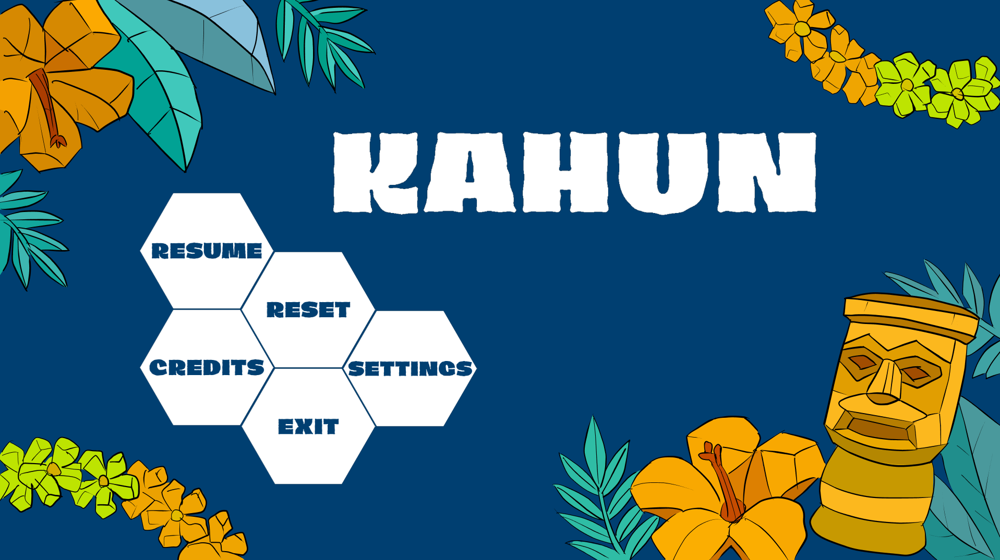
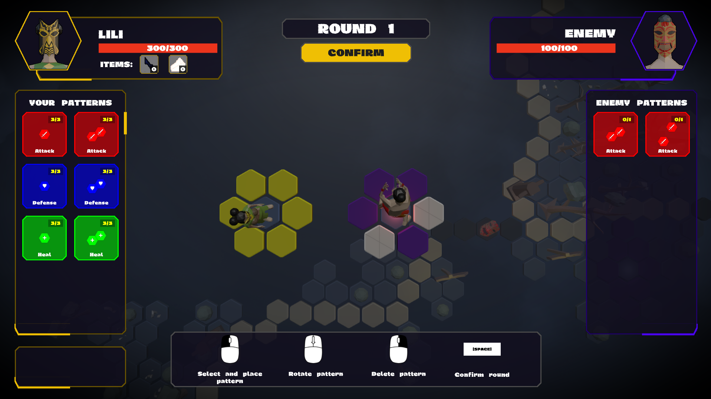
Download ▾
Play the latest available version of Kahun on itch.io and experience the game built on our custom C++ / OpenGL engine.
Events & Showcases ▾
Prototype Showcase & Public Playtests
Early DevelopmentAt an early prototyping stage, Kahun was presented to external players to validate the core gameplay loop and test whether the main mechanics were fun, readable, and engaging.
These sessions focused on gathering direct player feedback on movement, combat feel, and exploration, helping us identify issues early and iterate on the core design.
The feedback from these playtests had a major impact on shaping the final direction of the game.
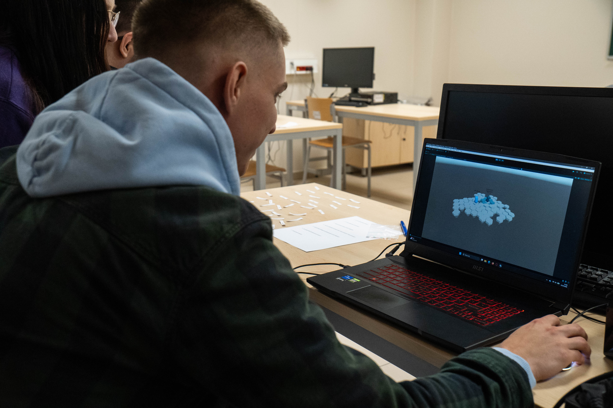
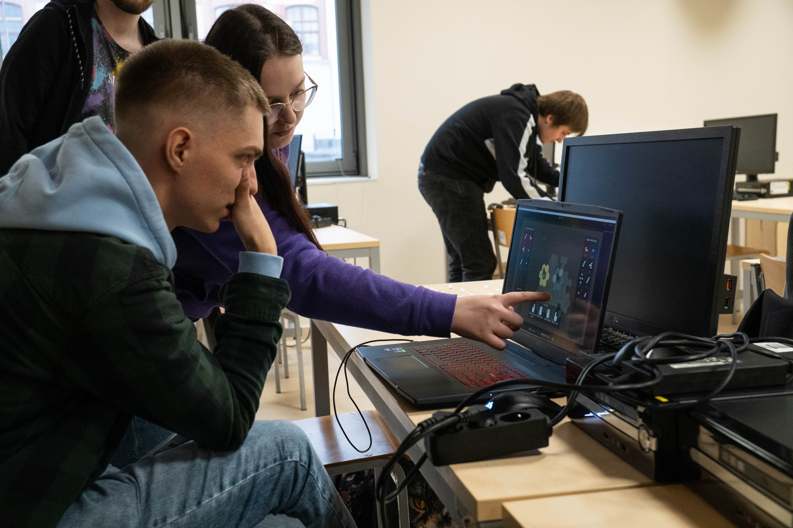
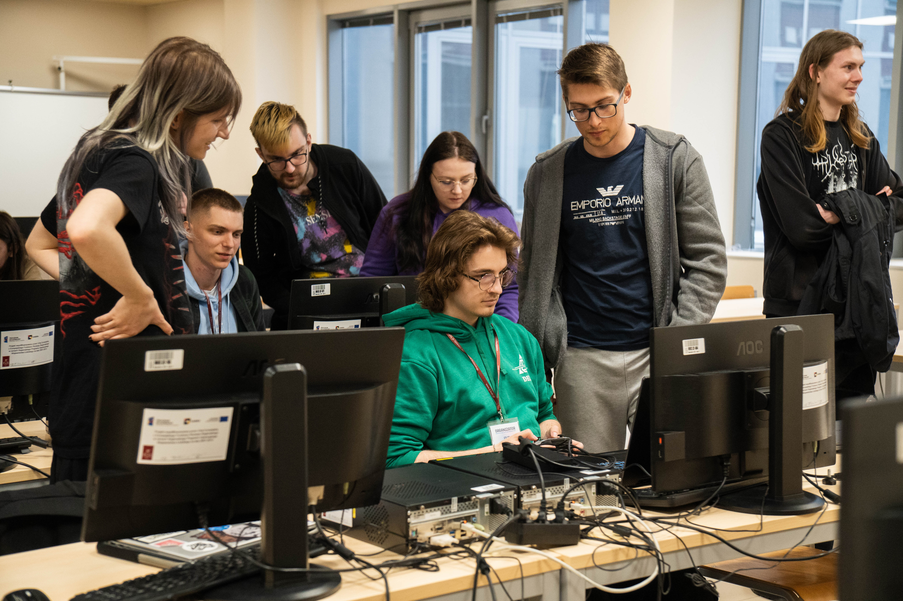
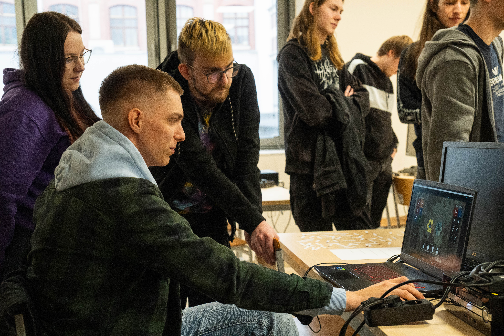
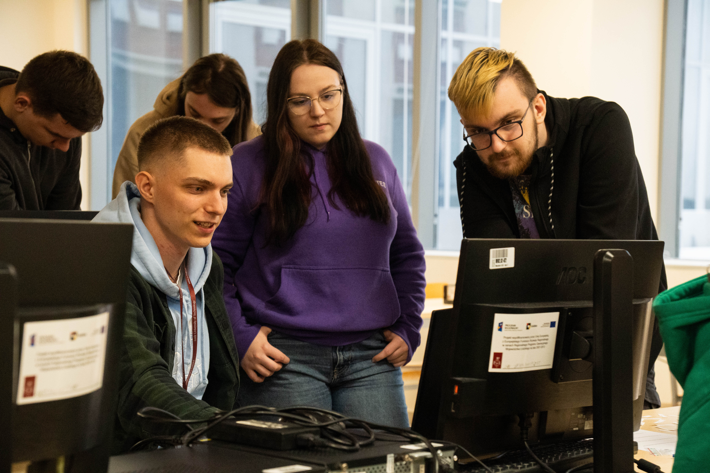
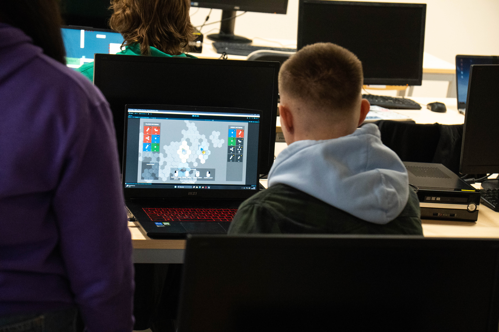
ZTGK Competition Showcase
2026Kahun was later presented in a competitive environment during the ZTGK showcase, where it was evaluated by industry professionals and jury members.
The presentation provided valuable feedback regarding engine architecture, gameplay systems, and overall project direction.
This stage marked an important validation point for both the engine and the game, confirming that the systems we built were stable enough for external evaluation.
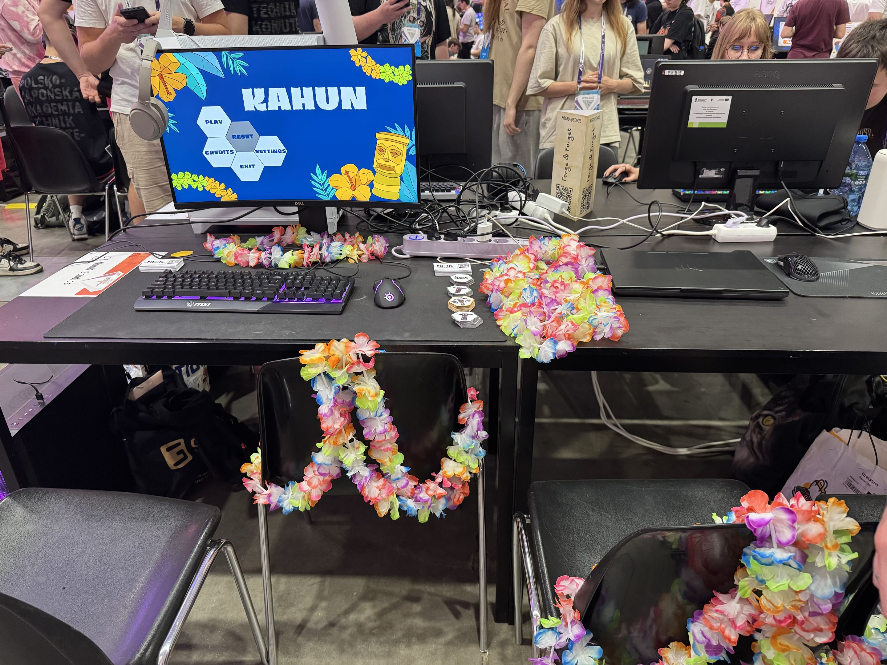
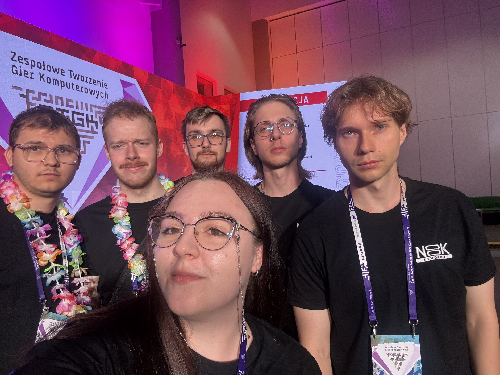
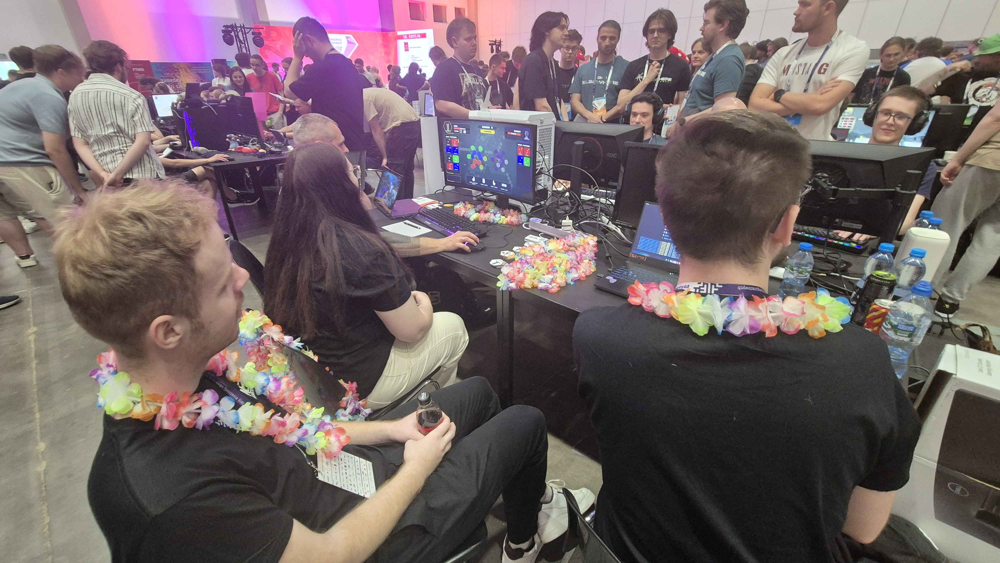
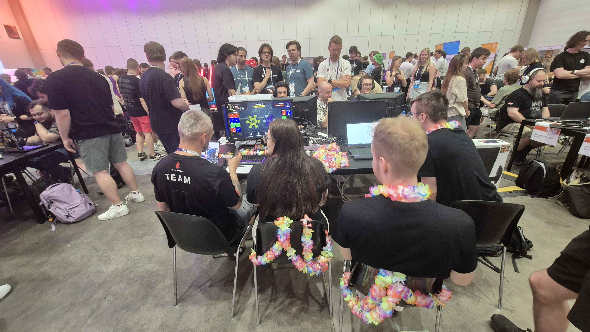
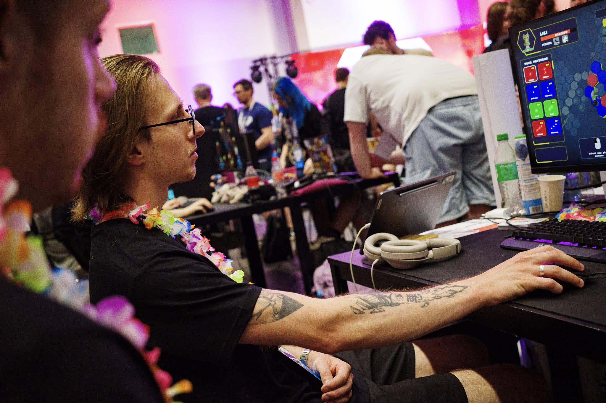
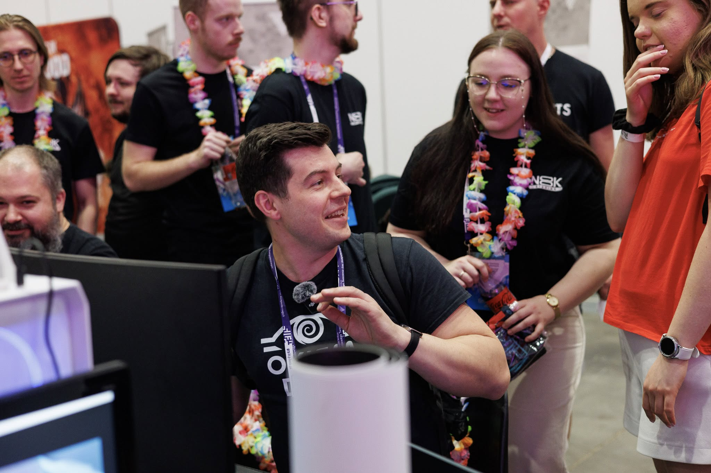